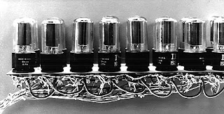
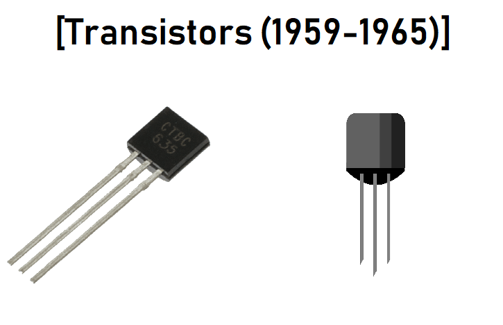
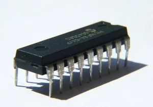
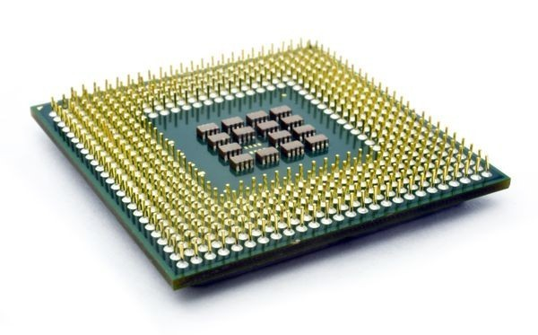

SEJARAH KOMPUTER DAN GERBANG LOGIKA
Sejarah teknologi komputer adalah kisah panjang yang menakjubkan tentang inovasi dan penemuan yang mengubah dunia. Artikel ini akan mengulas perkembangan sejarah komputer, dengan fokus pada konsep gerbang logika dan peran Central Processing Unit (CPU) dalam komputasi modern. Dengan pemahaman yang lebih mendalam tentang asal-usul dan evolusi komputer, kita dapat menghargai sejauh mana perkembangan teknologi telah membawa kita. Pemahaman tentang perkembangan ini penting untuk menghargai kompleksitas perangkat komputer saat ini dan dampaknya dalam berbagai bidang seperti ilmu pengetahuan, bisnis, dan hiburan.
Sejarah Komputer
Sejarah komputer telah mengalami perkembangan yang sangat signifikan selama lebih dari setengah abad. Dimulai dari alat mekanis sederhana pada abad ke-19, komputer telah mengalami evolusi yang luar biasa menjadi perangkat canggih yang memengaruhi hampir setiap aspek kehidupan kita. Namun, perkembangan yang paling mencolok terjadi selama abad ke-20, dengan lahirnya komputer elektronik pada tahun 1940-an. ENIAC, salah satu komputer pertama, memiliki ukuran yang sangat besar dan keterbatasan dalam penggunaan.

Kemudian, komputer semakin kecil dan lebih kuat dengan pengenalan sirkuit terpadu. Era mikrokomputer dimulai pada tahun 1970-an dengan munculnya komputer pribadi. Perkembangan teknologi semikonduktor telah memungkinkan komputer untuk menjadi lebih kecil, lebih cepat, dan lebih efisien. Saat ini, kita telah melihat evolusi ke komputer kuantum yang memiliki potensi untuk mengubah paradigma komputasi modern. Perjalanan sejarah komputer adalah cerminan kemajuan teknologi dan inovasi yang telah memengaruhi hampir setiap aspek kehidupan manusia.
Sejarah ini mencerminkan upaya manusia dalam memahami dan memanfaatkan kekuatan komputasi untuk mengatasi tantangan kompleks dalam ilmu pengetahuan, bisnis, dan kehidupan sehari-hari. Dengan perkembangan teknologi yang terus berlanjut, kita terus menyaksikan revolusi komputer yang mengubah cara kita bekerja, belajar, dan berinteraksi dengan dunia di sekitar kita.
Komputer dapat berjalan harus memiliki komponen utama yag saling berkaitan satu sama lain, jika salah satu komponen tidak terpenuhi, maka komputer bisa tidak berjalan.
Ada beberapa komponen utama dalam komputer, yaitu ;
- INPUT adalah perintah atau masukan yang bertugas menghubungkan sistem informasi, atau perintah untuk memasukkan data ke dalam komputer.
- CPU adalah otak dari komputer untuk memgolah data dan menjalankan program-program yang diintruksikan pengguna.
- OUTPUT adalah keluaran yang dihasilkan dari memproses data yang dimasukkan.
Berikut beberapa generasi komputer yang berkembang hingga saat ini :
- KOMPUTER GENERASI PERTAMA
 Gambar 3 - Vaccum Tube
- Ditemukan tahun 1940 – 1956
- Menggunakan komponen digital yaitu Vacumm Tube
- Menggunakan bahasa mesin (0 dan 1)
- Membutuhkan ruangan yang luas karena komputer pertama masih besar
- KOMPUTER GENERASI KEDUA
 Gambar 4 - Transistor
- Ditemukan tahun 1956-1963
- Menggunakan komponen digital Transistor
- Menggunakan bahasa assembly
- Ukuran tidak sebesar generasi pertama
- KOMPUTER GENERASI KETIGA
 Gambar 5 - IC
- Ditemukan tahun 1964-1971
- Menggunakan komponen digital IC (Integrated Circuit)
- Ukuran lebih kecil dari generasi sebelumnya
- KOMPUTER GENERASI KEEMPAT
 Gambar 5 - Mikroprosesor
- Ditemukan tahun 1971-sekarang
- Menggunakan Mikroprosesor sebagai komponen digital
- Sudah terdapat layar monitor berbasis GUI (Grapich Unit Interface)
- Ukuran bervariasi
- GENERASI SELANJUTNYA
Gambar 6 - Cloud Computing
- Berupa Cloud Computing dan AI
Gerbang Logika
Gerbang logika atau logic gates adalah proses pengolahan input bilangan biner dengan teori matematika boolean. Gerbang logika atau logic gates adalah proses pengolahan input bilangan biner dengan teori matematika boolean. Seperti yang kita ketahui, bilangan biner sendiri terdiri dari angka 1 dan 0. Berfungsi untuk melakukan fungsi logika dasar dengan bilangan biner dengan ditunjukan “0” yaitu salah dan “1” yaitu benar. Gerbang logika membentuk dasar dari semua operasi komputasi. Misalnya, kombinasi gerbang logika digunakan untuk melakukan perhitungan, memproses data, dan mengendalikan perangkat keras. Konsep gerbang logika adalah fondasi dari operasi komputer modern.
Tabel Kebenaran
Tabel Kebenaran adalah tabel untuk melihat nilai kebenaran dari hasil pernyataan. Tabel Kebenaran berisi tabel yang berisi kombinasi variabel input dan menghasilkan output.
Jenis - Jenis Gerbang Logika
Terdapat beberapa Gerbang Logika yang umum digunakan. Berikut ini beberapa gerbang logika dan tabel kebenarannya.
- Gerbang AND
- Gerbang OR
- Gerbang NOT
- Gerbang NAND
- Gerbang NOR
- Gerbang XOR
- Gerbang XNOR
Jenis pertama adalah gerbang AND. Gerbang AND memerlukan 2 input dengan 1 output dalam penggunaannya. Jika semua atau salah satu inputnya bernilai “0”, maka output nya menjadi 1.
Jenis kedua adalah gerbang OR. Sama seperti gerbang AND, gerbang OR memerlukan 2 input dengan 1 output dalam penggunaanya. Gerbang OR ini menghasilkan output “1”, jika semua atau salah satu inputnya bernilai “1”.
Jenis ketiga adalah gerbang NOT. Gerbang NOT ini merupakan gerbang pembalik keadaan. Jika salah inputnya “0”, maka outputnya “1” dan begitu sebaliknya.
Jenis keempat adalah gerbang NAND. Gerbang NAND ini merupakan gabungan dari gerbang AND dan gerbang NOT. Karena output yang dihasilkan dari gerbang NAND yaitu kebalikan dari output gerbang AND.
Jenis kelima adalah gerbang NOR. Gerbang NOR merupakan gabungan dari gerbang OR dengan gerbang NOT. Sehingga output yang dihasilkan merupakan kebalikan dari gerbang OR.
Jenis berikutnya adalah gerbang XOR. Gerbang XOR ini memerlukan 2 input untuk menghasilkan 1 output. Jika input berbeda, seperti “0,1” atau “1,0”, maka output yang dihasilkan “1”. Sedangkan, jika inputnya sama, maka outputnya “0”.
Jenis yang terakhir adalah gerbang XNOR. Gerbang XNOR ini merupakan dari Gerbang XOR, yang mana, jika inputnya sama, maka outputnya “1”. Sedangkan, jika inputnya berbeda, seperti “0,1” atau “1,0”, maka output yang dihasilkan “0”.